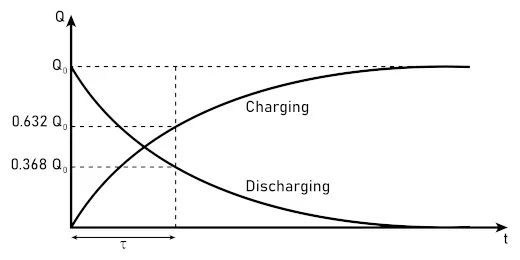

Capacitor
A capacitor functions primarily as a
charge storage device, accumulating electrical energy in an electric field. In a circuit, this behavior serves several distinct purposes:
Energy Storage: It stores electrons on conductive plates separated by an insulator (dielectric). This energy can be released rapidly, providing bursts of power that a battery cannot deliver.
Filtering and Smoothing: Capacitors oppose changes in voltage. In power supplies, they "smooth" rectified AC by filling the gaps between voltage peaks, resulting in a steady DC output.
DC Blocking and AC Coupling: Because the dielectric prevents the flow of direct current, capacitors block DC while allowing alternating signals (AC) to pass, which is essential for multistage amplifiers.
Timing: When paired with a resistor (RC circuit), the time it takes to charge or discharge defines specific intervals for oscillators and clock signals.
Charging and Discharging of Capacitor

Essentially, the capacitor acts as a
temporary reservoir, stabilizing voltage and managing frequency-dependent signals.
Capacitors are extensively used in DC circuits, but their behavior depends on whether the circuit is in a
transient or
steady-state condition.
When a DC voltage is first applied, the capacitor acts as a temporary path for current as it accumulates charge on its plates. This is the
transient phase. Once the voltage across the capacitor equals the source voltage, it reaches
steady state. At this point, the capacitor acts as an
open circuit, effectively blocking any further flow of direct current.
Common applications in DC include:
Decoupling/Bypassing: Placed near integrated circuits to suppress high-frequency noise and provide a local reservoir of energy during sudden current demands.
Smoothing: Converting the pulsating output of a rectifier into a constant DC voltage by "filling in" the voltage drops.
Timing: Using the predictable charging rate ($\tau = RC$) to create time delays.
While they block the continuous flow of DC, their ability to store and release energy makes them indispensable for stabilizing DC systems.